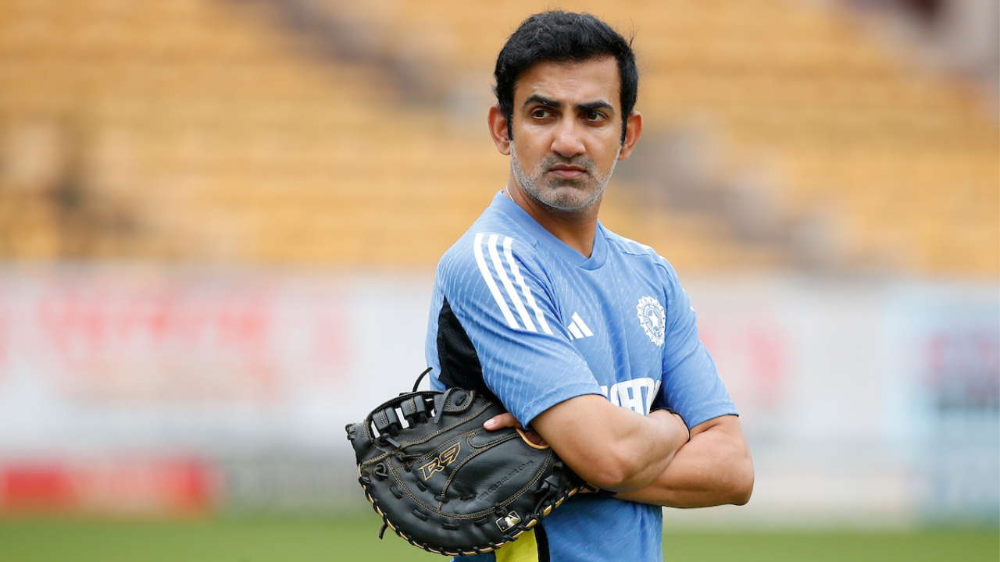

Gautam Gambhir is a former Indian cricketer, politician, and current Head Coach of the Indian Cricket Team, known for his aggressive left-handed batting and crucial contributions to India's 2007 T20 World Cup and 2011 Cricket World Cup victories. After retiring, he served as a Member of Parliament for East Delhi (2019-2024) and became a successful IPL mentor for KKR and LSG before taking the national coaching role, leading India to the 2025 Champions Trophy title. Cricket Career Highlights Batting Style: Left-handed, top-order batsman known for grit and tenacity. International Debut: 2003 (Tests), 2004 (ODIs). Key Achievements: Top-scorer in the 2011 World Cup Final (97), part of both T20 (2007) & ODI (2011) World Cup winning squads. IPL Success: Led Kolkata Knight Riders (KKR) to IPL titles in 2012 & 2014. Post-Playing Career & Coaching Politics: Joined Bharatiya Janata Party (BJP) in 2019, elected MP from East Delhi, focusing on education and sports. Mentorship: Mentored Lucknow Super Giants (LSG) to playoffs (2022, 2023). Head Coach: Appointed India's Head Coach in July 2024; guided India to the 2025 Champions Trophy win. Personal Life & Philanthropy Born: October 14, 1981, in New Delhi. Family: Married to Natasha Jain, with two daughters, Aazeen & Anaiza. Philanthropy: Runs the Gautam Gambhir Foundation, focusing on education for children of martyrs and community kitchens. Gautam Gambhir - Wikipedia